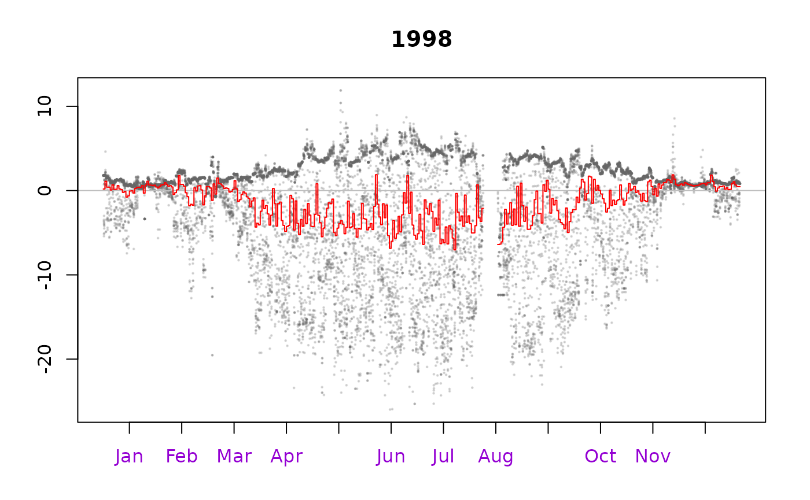

vignettes/gapFilling.Rmd
gapFilling.Rmd## Error in get(paste0(generic, ".", class), envir = get_method_env()) :
## object 'type_sum.accel' not found
library(dplyr)
#+++ Add time stamp in POSIX time format and filter long runs of equal values
EddyDataWithPosix <- fConvertTimeToPosix(
filterLongRuns(Example_DETha98, "NEE")
, 'YDH', Year = 'Year', Day = 'DoY', Hour = 'Hour')
#+++ Add some (non-sense) example vectors:
#+++ Quality flag vector (e.g. from applying ustar filter)
QF <- rep(c(1, 0, 1, 0, 1, 0, 0, 0, 0, 0), nrow(EddyDataWithPosix) / 10)
#+++ Dummy step function vector to simulate e.g. high / low water table
Step <- ifelse(EddyDataWithPosix$DoY < 200 | EddyDataWithPosix$DoY > 250, 0, 1)
#+++ Initialize new sEddyProc processing class with more columns
EProc <- sEddyProc$new(
'DE-Tha', cbind(EddyDataWithPosix, Step = Step, QF = QF)
, c('NEE', 'LE', 'H', 'Rg', 'Tair', 'Tsoil', 'rH', 'VPD', 'QF', 'Step'))
#+++ Gap fill variable with (non-default) variables and limits
# including preselection of data with quality flag QF == 0
EProc$sMDSGapFill(
'LE', QFVar = 'QF', QFValue = 0, V1 = 'Rg', T1 = 30, V2 = 'Tsoil', T2 = 2
, 'Step', 0.1)
#+++ Use individual gap filling subroutines with different window sizes
# and up to five variables and limits
EProc$sFillInit('NEE') #Initialize 'NEE' as variable to fill
Result_Step1.F <- EProc$sFillLUT(
3, 'Rg', 50, 'rH', 30, 'Tair', 2.5, 'Tsoil', 2, 'Step', 0.5)
Result_Step2.F <- EProc$sFillLUT(6, 'Tair', 2.5, 'VPD', 3, 'Step', 0.5)
Result_Step3.F <- EProc$sFillMDC(3)
#Individual fill result columns are called 'VAR_...'
EProc$sPlotHHFluxesY('VAR_fall', Year = 1998)
EProcMDS <- sEddyProc$new(
'DE-Tha', EddyDataWithPosix, c('NEE', 'Rg', 'Tair', 'VPD'))
#Initialize 'NEE' as variable to fill
EProcMDS$sFillInit('NEE')
# Set variables and tolerance intervals
V1 = 'Rg'; T1 = 50 # Global radiation 'Rg' within +/-50 W m-2
V2 = 'VPD'; T2 = 5 # Vapour pressure deficit 'VPD' within 5 hPa
V3 = 'Tair'; T3 = 2.5 # Air temperature 'Tair' within +/-2.5 degC
# Step 1: Look-up table with window size +/-7 days
ResultStep1 <- EProcMDS$sFillLUT(7, V1, T1, V2, T2, V3, T3)
# Step 2: Look-up table with window size +/-14 days
ResultStep2 <- EProcMDS$sFillLUT(14, V1, T1, V2, T2, V3, T3)
# Step 3: Look-up table with window size +/-7 days, Rg only
ResultStep3 <- EProcMDS$sFillLUT(7, V1, T1)
# Step 4: Mean diurnal course with window size 0 (same day)
ResultStep4 <- EProcMDS$sFillMDC(0)
# Step 5: Mean diurnal course with window size +/-1, +/-2 days
ResultStep5a <- EProcMDS$sFillMDC(1)
ResultStep5b <- EProcMDS$sFillMDC(2)
# Step 6: Look-up table with window size +/-21, +/-28, ..., +/-70
for (WinDays in seq(21, 70, 7) )
ResultStep6 <- EProcMDS$sFillLUT(WinDays, V1, T1, V2, T2, V3, T3)
# Step 7: Look-up table with window size +/-14, +/-21, ..., +/-70, Rg only
for (WinDays in seq(14, 70, 7) )
ResultStep7 <- EProcMDS$sFillLUT(WinDays, V1, T1)
# Step 8: Mean diurnal course with window size +/-7, +/-14, ..., +/-210 days
for (WinDays in seq(7, 210, 7) )
ResultStep8 <- EProcMDS$sFillMDC(WinDays)
# Export results, columns are named 'VAR_'
FilledEddyData <- EProcMDS$sExportResults()
head(FilledEddyData)## VAR_orig VAR_f VAR_fqc VAR_fall VAR_fall_qc VAR_fnum VAR_fsd VAR_fmeth
## 1 -1.21 -1.210000 0 1.373704 1 54 2.531604 1
## 2 1.72 1.720000 0 1.396364 1 55 2.513678 1
## 3 NA 1.006569 1 1.006569 1 58 3.311918 1
## 4 NA 1.061343 1 1.061343 1 67 3.164355 1
## 5 2.55 2.550000 0 1.071176 1 68 3.141698 1
## 6 NA 1.205441 1 1.205441 1 68 2.884610 1
## VAR_fwin
## 1 14
## 2 14
## 3 14
## 4 14
## 5 14
## 6 14